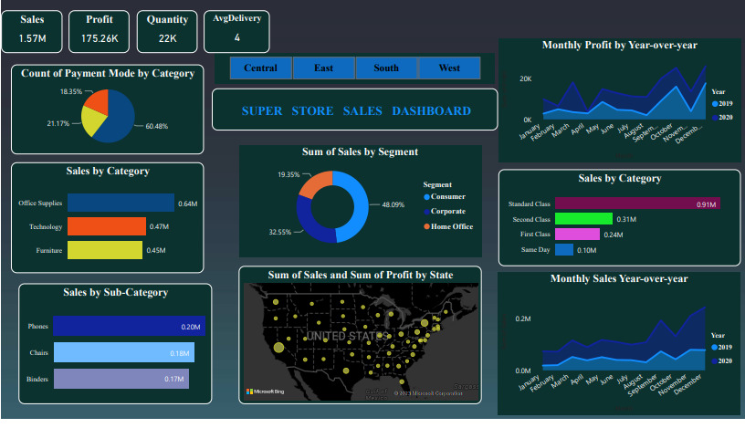

Incoporated data analysis techniques, specializing in time series Analysis, to deliver valuable insights, accurate sales forecasting , and interactive dashboard creation, driving business success .

We analysed about the number of Schizophrenic patients that will be discharged from the hospital depending upon the number of Schizophrenic patients getting admitted and also determined which political party performed better in providing medical facilities to Schizophrenic patients based upon dataset on Bed availability in different states.Also, which age group is more prone to schizophrenia and to provide remedies to that age group to get rid of schizophrenia.
Building a ML Model To find the fraud in the credit card transaction using different Classification Algorithm and also provided a comparison of these algorithm based on its advantage and disadvantage.

VIEW PROJECTy
This project focuses on utilizing web scraping technique like Beautiful Soup to extract valuable information from the Amazon website regarding skincare products. The objective is to gather comprehensive data on various skincare products, including their Title names, prices, ratings, Rating count, ingredients, and Availability.